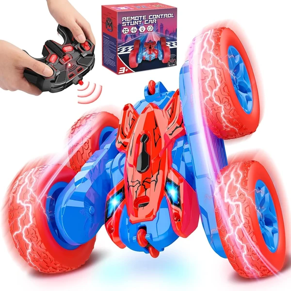
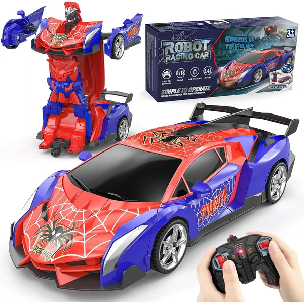

QUNREDA Coche RC Stunt
Un coche teledirigido 4WD capaz de dar volteretas de 360° con dos baterías modulares intercambiables sin herramientas, que suman hasta 50 minutos de juego. Incluye luces LED y carga por USB-C.
⭐ ¿Por qué nos gusta?
- ✔ Volteretas de 360° y giros multidireccionales.
- ✔ Dos baterías intercambiables sin herramientas.
- ✔ Carga rápida por USB-C.
💬 Lo que más destacan las familias
Quienes lo han comprado destacan lo resistente que resulta frente a golpes y caídas, algo que se agradece en el juego diario. La duración de las baterías también aparece muy mencionada en las opiniones.
Ver en Amazon

Dreamlandia Monster Truck
Un coche teledirigido con forma de araña y eje delantero giratorio de 360°, con carga directa por USB sin necesidad de sacar la batería. Ofrece hasta 60 minutos de diversión por carga.
⭐ ¿Por qué nos gusta?
- ✔ Giro de 360° con diseño llamativo.
- ✔ Carga directa por USB, sin desmontar batería.
- ✔ Hasta 60 minutos de autonomía por carga.
💬 Lo que más destacan las familias
Muchos padres coinciden en que la batería aguanta mucho más tiempo del esperado, lo que evita interrupciones a media partida. El diseño llamativo también gusta bastante a los niños.
Ver en Amazon

Hot Wheels Barbie SUV Teledirigido
Un todoterreno teledirigido con espacio para dos muñecas Barbie y accesorios de viaje, ideal para combinar el juego con coches y el juego simbólico. Incluye pegatinas para personalizarlo.
⭐ ¿Por qué nos gusta?
- ✔ Espacio para muñecas y accesorios.
- ✔ Uso en interiores y exteriores.
- ✔ Incluye pegatinas para personalizar.
💬 Lo que más destacan las familias
Entre los comentarios más habituales aparece lo bien que combina la conducción teledirigida con el juego de muñecas. Las fans de Barbie disfrutan especialmente poder personalizarlo con las pegatinas incluidas.
Ver en Amazon

KINSAM Coche Teledirigido RC
Un coche teledirigido a escala 1/16 capaz de alcanzar 25 km/h, con un alcance de hasta 80 metros. Su carrocería resistente permite jugar tanto en interiores como en exteriores.
⭐ ¿Por qué nos gusta?
- ✔ Velocidad de hasta 25 km/h.
- ✔ Alcance de control de hasta 80 metros.
- ✔ Carrocería resistente a golpes y derrapes.
💬 Lo que más destacan las familias
Una de las cosas que más se repite es la velocidad que alcanza, algo que sorprende gratamente en las primeras carreras. El alcance del mando también se valora para jugar en espacios abiertos.
Ver en Amazon

Spider Coche con Reconocimiento de Gestos
Un coche acrobático 4x4 que se controla también con gestos de la mano, además del mando tradicional. Realiza giros de 360° y saltos mortales, con carga rápida por USB-C.
⭐ ¿Por qué nos gusta?
- ✔ Control por gestos además del mando.
- ✔ Giros de 360° y acrobacias a alta velocidad.
- ✔ Recarga rápida por USB-C.
💬 Lo que más destacan las familias
Lo que más suele gustar es poder manejarlo con gestos de la mano, algo que los niños encuentran muy novedoso frente a los mandos habituales. Las acrobacias a alta velocidad también se mencionan como un punto fuerte.
Ver en Amazon

OYAKG Coche Teledirigido Unicornio
Un coche teledirigido 4WD con diseño de unicornio en rosa y blanco, capaz de hacer giros y volteretas automáticas. Incluye luces LED y alcanza hasta 15 km/h en distintos terrenos.
⭐ ¿Por qué nos gusta?
- ✔ Diseño de unicornio con luces LED.
- ✔ Realiza giros y volteretas automáticas.
- ✔ Tracción 4WD para distintos terrenos.
💬 Lo que más destacan las familias
Una característica muy mencionada es el diseño de unicornio, que suele ser un acierto seguro como regalo para niñas. Las volteretas automáticas también sorprenden gratamente a quienes lo prueban por primera vez.
Ver en Amazon

Dreamlandia Monster Truck Todoterreno
Un coche teledirigido con dos motores y doble batería de gran capacidad, capaz de circular por césped, playa o asfalto. Incluye faros para jugar también al anochecer.
⭐ ¿Por qué nos gusta?
- ✔ Dos baterías de gran capacidad.
- ✔ Circula por distintos tipos de terreno.
- ✔ Faros incluidos para jugar de noche.
💬 Lo que más destacan las familias
Los compradores valoran especialmente que aguante bien en distintos terrenos, desde el césped hasta la playa. Los faros incorporados se mencionan como un extra útil para seguir jugando al anochecer.
Ver en Amazon

Coche Robot Spider Transformable
Un coche teledirigido que se transforma en robot con solo pulsar un botón del mando. A escala 1/18, gira 360° suavemente gracias a su rueda deslizante inferior.
⭐ ¿Por qué nos gusta?
- ✔ Se transforma de coche a robot y viceversa.
- ✔ Giro de 360° suave y controlado.
- ✔ Recargable, sin necesidad de pilas extra.
💬 Lo que más destacan las familias
No es raro encontrar comentarios sobre lo original que resulta ver cómo el coche se transforma en robot con solo pulsar un botón. El giro suave a 360° también se menciona como uno de sus puntos fuertes.
Ver en Amazon